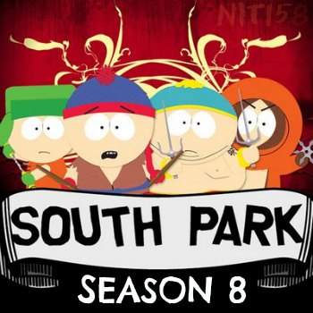

FYC://South Park s08 season 8 Complete 480p UNCENSORED WEB-DL x264 mp4 NIT158
Descption:
South Park s08 season 8 Complete UNCENSORED 480p WEB-DL x264 mp4 NIT158

IMDB
:
http://www.imdb.com/title/tt0121955/episodes?season=8
Format : MPEG-4 (mp4)
File Size : ~ 35 MB each episode (some eps lesser than that)
Video
:
[common for all episodes]
Format/Info : Advanced Video Codec (x264)
Format profile : Main@L3.1
Resolution : 848 x 480
Aspect ratio : 16:9
Frame rate mode : Constant
Frame rate : 23.976 fps
___________________________________________________________
Episode No./ Title ................................................... Duration ..... Bit rate
___________________________________________________________
s08e01 - Good Times with Weapons ........................ 22mn 4s ..... 200 Kbps
s08e02 - Up the Down Steroid ................................. 22mn 4s ..... 160 Kbps
s08e03 - The Passion of the Jew ............................. 22mn 4s ..... 170 Kbps
s08e04 - You Got F'd in the A ................................... 22mn 4s ..... 190 Kbps
s08e05 - AWESOM-O ................................................ 22mn 4s ..... 160 Kbps
s08e06 - The Jeffersons ........................................... 22mn 4s ..... 160 Kbps
s08e07 - Goobacks .................................................. 22mn 4s ..... 170 Kbps
s08e08 - Douche and Turd ....................................... 22mn 4s ..... 180 Kbps
s08e09 - Something Wall-Mart This Way Comes ...... 22mn 4s ..... 180 Kbps
s08e10 - Pre-School ................................................. 22mn 4s ..... 170 Kbps
s08e11 - Quest for Ratings ...................................... 22mn 4s ..... 190 Kbps
s08e12 - Stupid Spoiled Whore Video Playset .......... 22mn 4s ..... 180 Kbps
s08e13 - Cartman's Incredible Gift ........................... 22mn 4s ..... 180 Kbps
s08e14 - Woodland Critter Christmas ...................... 22mn 4s ..... 190 Kbps
____________________________________________________________
Audio
: [common for all ep.]
Format/Info : Advanced Audio Codec
Format profile : HE-AACv2 / HE-AAC / LC
Bit rate : 32.0 Kbps
Channel(s) : 2 channels / 1 channel / 1 channel
Channel positions : Front: L R / Front: C / Front: C
Sampling rate : 48.0 KHz / 48.0 KHz / 24.0 KHz
Language : English
Subtitles
:
Type : srt ( not hard coded .. can be disabled/turned off )
Language : English
Compatibility
:
iPad 1/2/3/4/mini, iPhone4/4S/5, iPOD touch 4/5, iPod nano 7, PS3, Xbox 360, WDTV, Amazon Kindle, all Tablets, other Android devices and of course PC
Notes:
There is no note for this torrent